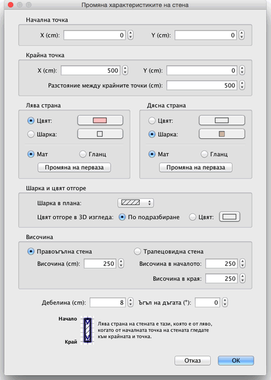

| Промяна на стените | |||
|
Можете да променяте мястото и дължината на стена, чрез
мишката или от менюто План > Промени
стена... . Когато сте маркирали една стена, можете също да местите нейните начална и крайна точки, чрез индикаторите, които се появяват в двата края на маркираната стена.
|

|
|
Когато попадне върху началната или крайна точки на
стената, показалецът на мишката се променя за да покаже, че сте на
мястото, което можете да "хванете". Когато хванете някой от
индикаторите до него ще се появи подсказка с текущата дължина на
стената. Стена можете да променяте и чрез нейния панел чрез двойно цъкване върху тази стена в плана, или като изберете План > Промени стена... след като сте я маркирали.  В панела Промяна характеристиките на стена,
можете да
променяте координатите на началната и крайната и точки,
цвета, шарката или блясъка на лявата и дясната и страна,
дебелината и височината и и нейния радиус, ако стената е овална. |
|